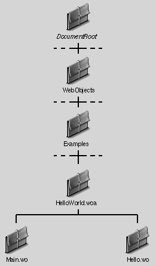

When you create an application in WebObjects Builder, you're creating a new directory under <DocumentRoot>/WebObjects. All WebObjects applications must be
located beneath this directory so that the HTTP server can find them. The application directory is given the extension .woa.
The application directory contains the application's resources. These resources
consist mainly of components, which are dynamic HTML pages.
Components are themselves directories, consisting of files that store the HTML, the
script, bindings, and any component-specific resources. The component for the first
page of the application is usually named Main.wo.

|  Table of Contents
Table of Contents
 Previous Section
Previous Section
 Next Section
Next Section